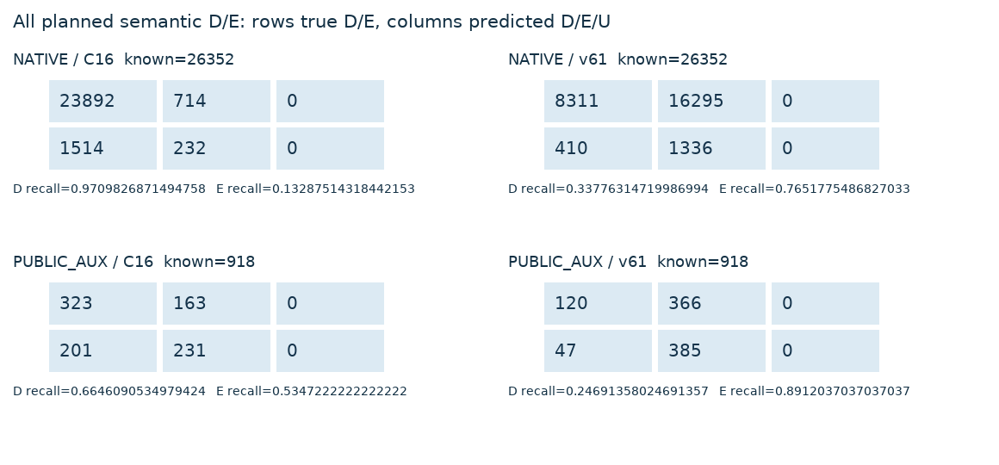
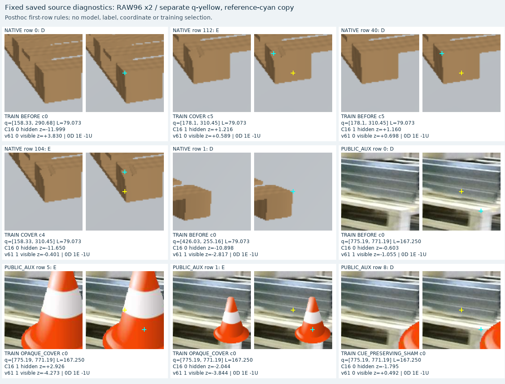

새 학습·모델 선택·임계값 변경 없이 저장된 C16/v61 결과를 비교했습니다. 실제 현재 평가나 전이 성공의 증거가 아닙니다. 합성 wood/polymer 재질과 rectangular/square 형상은 독립 축이며 실제 WOOD/SQUARE 평가군과 다릅니다.
행 D/E, 열 예측 D/E/U. 전체 known D/E의 recall 분모에는 예측 U를 포함합니다. 모델별 전체·자체 가용·공통 가용 분모를 JSON에 모두 보존했습니다. S 응답은 외부 E 정답으로 해석하지 않으며 teacher U는 미정 상태입니다.
| 자료 | 모델 | 분모 | CM | D P | D R | E P | E R | 예측 U |
|---|---|---|---|---|---|---|---|---|
| NATIVE | C16 | own_full_denominator | [[23892, 714, 0], [1514, 232, 0]] | 94.04% | 97.10% | 24.52% | 13.29% | 0 |
| NATIVE | C16 | shared_available_subset | [[23892, 714, 0], [1514, 232, 0]] | 94.04% | 97.10% | 24.52% | 13.29% | 0 |
| NATIVE | v61 | own_full_denominator | [[8311, 16295, 0], [410, 1336, 0]] | 95.30% | 33.78% | 7.58% | 76.52% | 0 |
| NATIVE | v61 | shared_available_subset | [[8311, 16295, 0], [410, 1336, 0]] | 95.30% | 33.78% | 7.58% | 76.52% | 0 |
| PUBLIC_AUX | C16 | own_full_denominator | [[323, 163, 0], [201, 231, 0]] | 61.64% | 66.46% | 58.63% | 53.47% | 0 |
| PUBLIC_AUX | C16 | shared_available_subset | [[323, 163, 0], [201, 231, 0]] | 61.64% | 66.46% | 58.63% | 53.47% | 0 |
| PUBLIC_AUX | v61 | own_full_denominator | [[120, 366, 0], [47, 385, 0]] | 71.86% | 24.69% | 51.26% | 89.12% | 0 |
| PUBLIC_AUX | v61 | shared_available_subset | [[120, 366, 0], [47, 385, 0]] | 71.86% | 24.69% | 51.26% | 89.12% | 0 |


Native 192개 설정·768개 장면, 공개 실사 6cue·6원본 프레임의 반복 조건입니다. query/variant 반복은 독립 새 이미지가 아닙니다. 등록 합성의 연속 구조영역 teacher와 q 픽셀의 owner 목적을 별도 계산했습니다. 공개 pasted alpha 밖은 target 확인을 뜻하지 않습니다. q와 L은 그대로이며 reference 마크는 표시 사본에만 있습니다. 모든 source query는 emulation이며 실제 initializer 정확도 인증이 아닙니다. Native U/부분/aliasing 및 공개 weak cue의 불확실성을 유지했습니다. 새로운 학습 승인이나 모델 추천을 만들지 않습니다.
전체 factor/availability/S/U/qpixel JSON · 전체 행 · 모든 계획 triplet · 그림 선택 규칙·원행